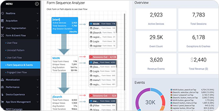
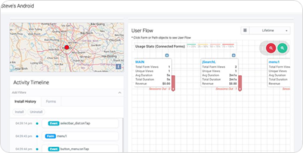
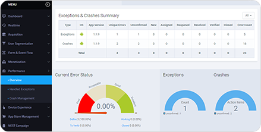
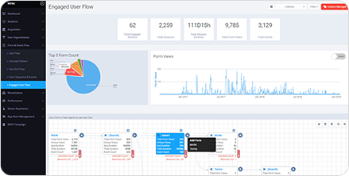

Appreneur Introduction
Appreneur는 진정한 AI엔진을 통해서 스마트 앱 사용자의 단말 행동 패턴 분석 데이터를 제공하여 고객사의 앱 성능 향상, 활성화 사용자 증가, 신규 다운로드 사용자 모집을 위한 스마트 앱 비즈니스 솔루션입니다.
Appreneur Features

고 효율 앱 비즈니스 솔루션
맞춤형 마케팅솔루션 “앱프리너”
앱프리너의 상세한 앱 사용자 9개 그룹 : Active, New Install, Uninstall, Engaged, Returning, Retention, Dormant, Reactivated, Paid
모든 사용자 그룹은 단말에서 수집되는 행동 데이터를 패턴 분석 데이터화 하여 사용자 행동 추적/분석/예측, 그리고 이를 통한 사용자 빅데이터 생성을 통해서 모든 앱 마케팅 전략을 맞춤형으로 변화 시킬 수 있습니다.
- 상세한 사용자 분류/추적 및 행동 패턴의 완벽한 분석을 통한 타겟 마케팅
- 학습형 AI 엔진에 의한 탈퇴 사용자의 행동 패턴 분석
- 실시간 사용자의 현황 분석을 통한 사용자 대응 처리 속도 개선
- 탈퇴/휴면 사용자의 과거 행동 패턴 분석을 통한 리마케팅
- 활성화/VIP 사용자의 행동 패턴 분석 비교를 통한 유인 마케팅
- 지역/이용패턴/앱 버전/단말 환경 등 다양한 Funnel 마케팅 가이드 제시

사용자 빅데이터를 위한 프로파일 데이터
사용자별 프로파일 데이터의 빅 데이터 활용
앱프리너는 모든 사용자가 단말 환경에서 발생되는 행동 데이터가 독립적으로 생성/관리/활용 되어집니다. 그 행동데이터는 AI Agent에서 의해서 사용자별 프로파일로 생성/관리되어지며 개별적/그룹별/조건별 검색 기능을 통해서 다양한 빅데이터로 활용됩니다.
- Who : User Device Name(or ID)
- What : User Device Info, User Info, Activity History, Session History, Usage Pattern
- How : All history Data, Flow Chart, Map location
- When : Install History, Revenue History
- Why : User Flow with Form (Screens) and Event Stats
- Where : Map Location with country and city
- TimeLine Chart : User Journey History by all activity time slots

완벽한 에러 형상 관리 프로세스
정확한 에러 분석과 4/7 상태의 에러 형상관리 프로세스
앱프리너의 에러는 개발자에 의해서 정의된 Exception 에러와 단말 시스템에서 예측할 수 없는 Crash 에러로 구분되며 모든 에러는 4/7 상태 정보에 따른 에러 복구 현황 프로세스에 의해서 형상 관리됩니다. 앱프리너에서는 중복/유사 에러를 100% 방지합니다.
앱프리너의 one-stop error management 관리 콘솔, “4/7 에러 형상 관리 프로세스" 는 에러 복구 업무를 관련 업무 실행자들의 업무 현황을 다음과 같이 관리합니다.
- 4 에러 상태 : Define Error Working Error To Verify Error Close Error
- 7 에러 복구 상태 : Unconfirmed Error New Error Verified Error Assigned Error Reopened Error Resolved Error Closed Error

진정한 AI 엔진을 통한 이용 패턴 분석
학습형 AI 엔진을 통한 사용자 행동 추적 및 분석
모바일 앱 사용자는 다양한 스마트 폰 환경과 다양한 행동이 발생됩니다. 앱프리너의 사용자 행동 패턴 분석은 “학습형 AI엔진” 에 의해서 개인화 데이터가 생성됩니다. 모든 데이터는 사용자의 행동 패턴 분석을 위해서 과거의 이용 패턴과 현재의 이용 패턴, 미래의 이용 패턴을 상호 연관관계 성립을 통해서 분석됩니다. 앱프리너의 분석은 사용자 단말 환경에서 발생되는 앱 화면에서의 행동 연관관계를 분석합니다.
- Flow Chart를 통한 화면 이용 패턴 분석, 이벤트 발생 추적
- Session Time과 화면 이동 패턴 분석을 통한 화면/이벤트 Churn 분석
- 탈퇴 사용자의 이용 패턴별 데이터 분석
앱프리너는 사용자의 행동 패턴 분석을 통해서 앱 서비스의 성공을 위한 다음 단계에 해야 할 비즈니스 전략과 계획을 제공합니다.
Appreneur Success Guide
온라인쇼핑몰 분야
-
01 세분화된 사용자 행동 추적
- Active / Retention / New Install / Returning / Uninstall / Engaged / Dormant / Reactivated / Paid / 9개의 사용자 그룹 분류 및 행동 추적
- 지역별 / 나이별 / 성별 / 이용패턴별 사용자 행동 분류 및 추적
-
02 사용자 행동패턴 분석
- 언제, 어디서, 누가, 무엇을, 어떻게, 왜 당신의 앱을 사용하고 있습니까?
- 사용자의 행동 패턴 분석 및 사용자별 행동 데이터 의 빅데이터화
- 탈퇴/휴면 사용자의 이용 패턴 분석을 통한 탈퇴 원인 추적 및 리마케팅
-
03 실시간 성능 형상관리 프로세스
- 개발자 사전 정의 에러와 단말 시스템 충돌 에러로 구분된 상세한 성능
- 자동 에러 추적 및 실시 간 에러 모니터링
- 에러 형상 관리를 위한 완벽한 형상 관리 프로세스
-
04 VIP/연속 사용자 우선
- 1회/월 활성화 사용자, 연속 사용자, VIP 사용자의 구분
- VIP/연속 사용자의 행동 패턴 분석을 통한 서비스 품질 향상
- VIP/연속 사용자 맞춤형 마케팅 전략
-
05 모바일 빅데이터 마케팅
- 사용자별 빅데이터 생성 관리를 통한 개인화 / 타겟 마케팅 실행
- 고객 응대 시 사용자별 빅데이터 활용을 통해서 고객 대응 체계 향상
- 실시간 맞춤형 마케팅 전략 수행과 휴면 / 탈퇴 사용자를 대상으로 리마케팅 실행
Appreneur Reference
미국, 유럽, 남아메리카 등 글로벌 시장에 3백만개 이상의 앱에 적용하여 사용 중인 솔루션으로, 앱 성능 향상 및 마케팅 솔루션으로써 고객 만족도가 높은 검증된 솔루션입니다. 국내 금융기관, 공공기관 등 다양한 고객사에서 도입을 추진하고 있습니다.